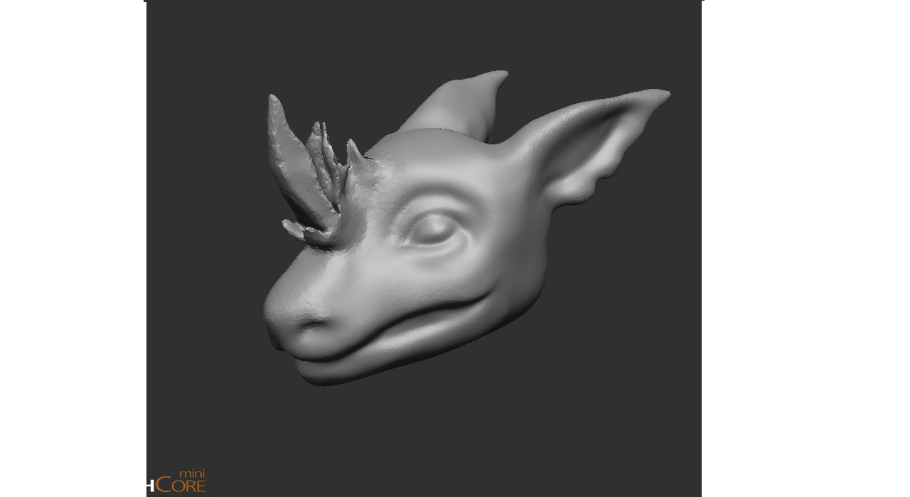
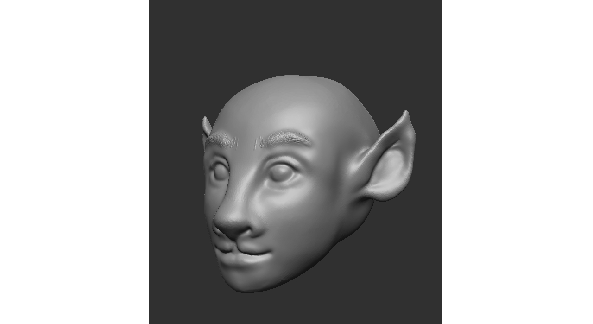

The Zbrush project I got the most invested in. The brief for this project was to sculpt 3 different heads in Zbrush.
This is the first head I sculpted. I modeled it after a character I made up.
This was the second head I sculpted. I had the idea to combine animal like features with the human face. I was also inspired by the firbolg species in Dungeons and Dragons. That race is humanoid with bovine and sheep like features.
This was the last head I sculpted. It's the most human-like out of the three of them. After giving the character spikey/whispy hair, it reminded me of an anime character: Coach Ukai from Haikyuu so I added the headband to make it look more like him.